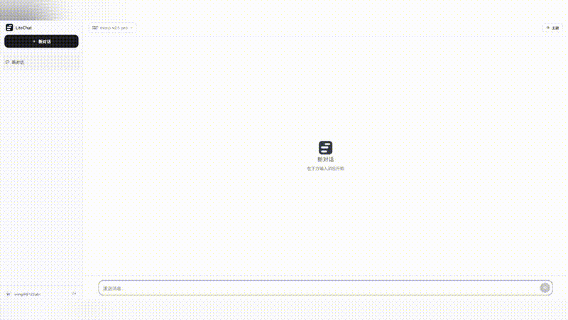
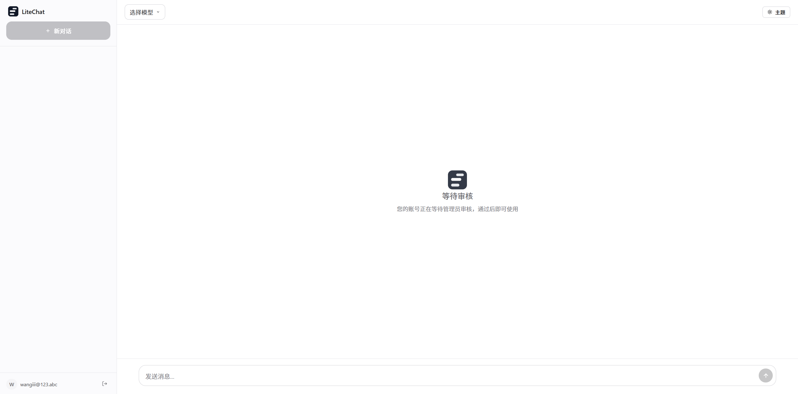
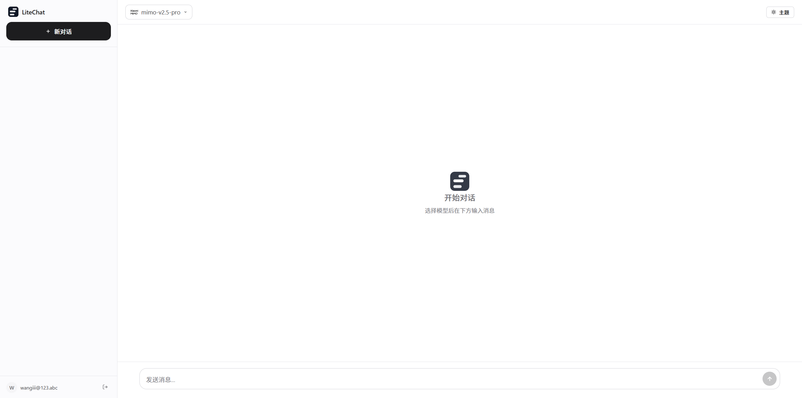
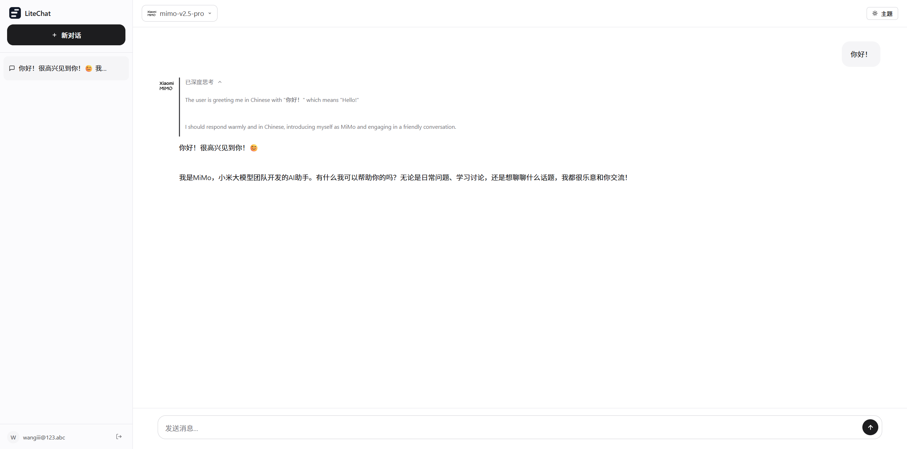
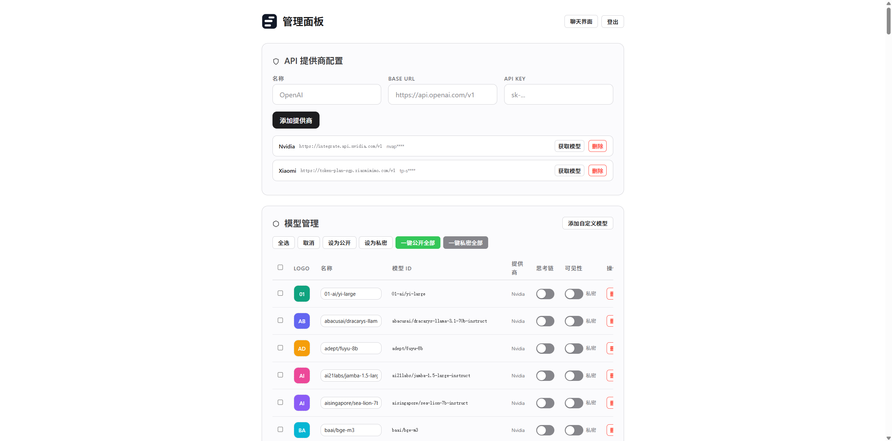

开箱即用的多用户 AI 对话网站，支持多个 API 提供商，流式输出，思考链展示。零构建，一键部署。

简单易用，功能强大
纯 HTML/CSS/JS 前端，Node.js 单文件后端，无需 webpack/vite，开箱即用。
开放注册，管理员审核通过后方可使用，完善的用户权限管理。
支持同时配置多个 OpenAI 兼容 API，包括 OpenAI、DeepSeek、Ollama 等。
SSE 实时推送，切换对话不中断，流畅的对话体验。
支持 DeepSeek R1 等推理模型的思考过程展示，折叠/展开动画。
深色/浅色主题自由切换，响应式设计，桌面端和移动端自适应。
简洁优雅的设计



强大的后台管理
